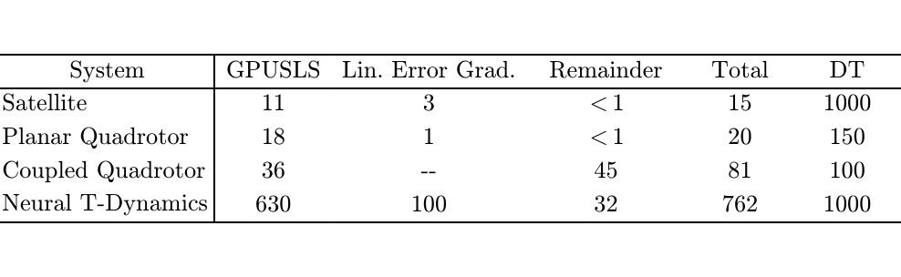
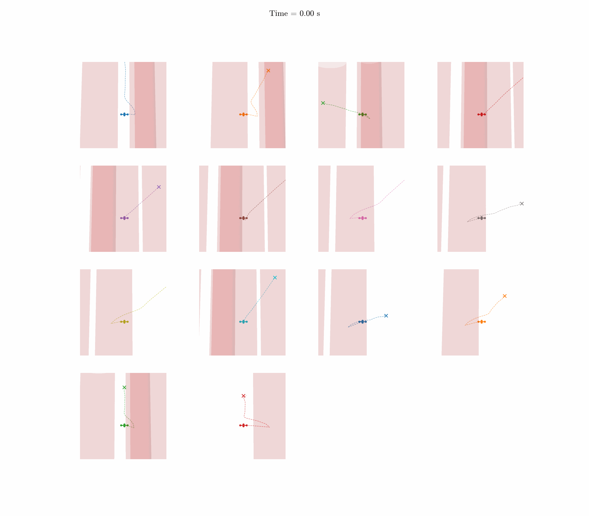
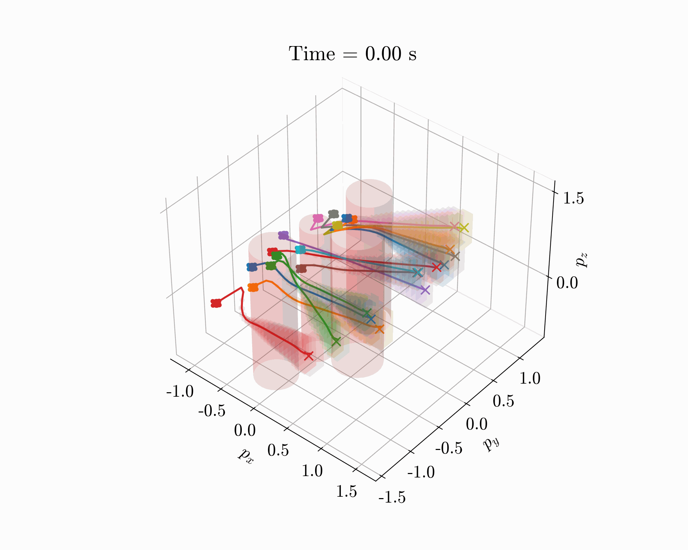
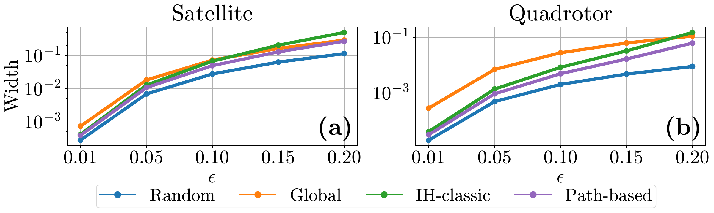
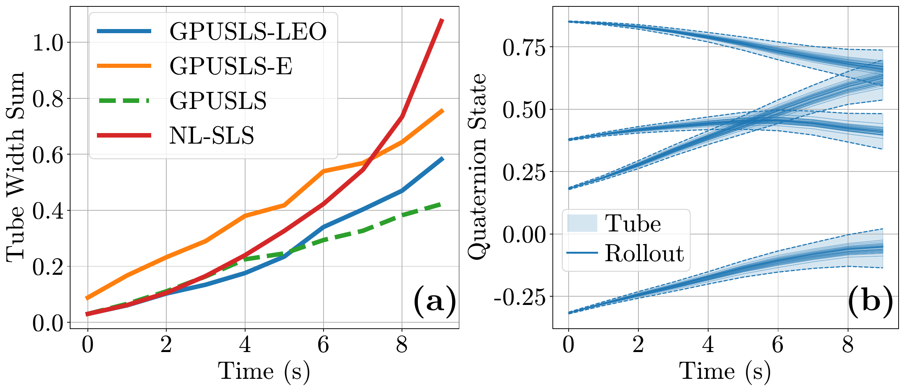
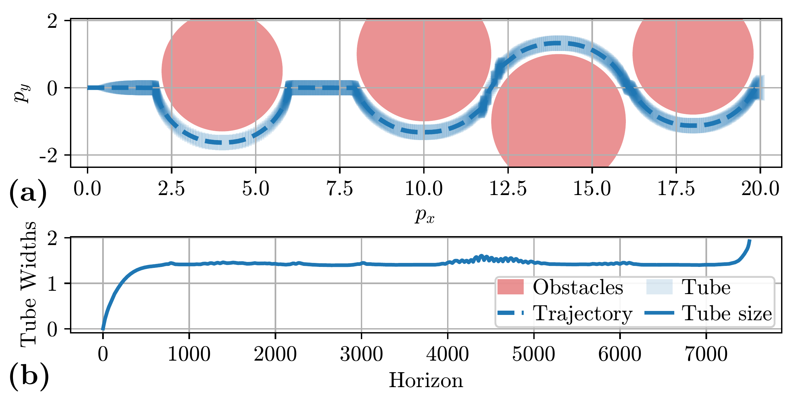
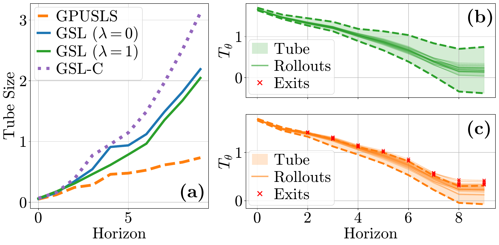

Tight local bounds
Path-based Hessian bounds improve over standard interval methods for analytic dynamics by focusing on the local tube around a nominal trajectory.
LTV approximations make nonlinear robust optimal control tractable, but their guarantees depend on bounding the gap between the true dynamics and the approximation. The paper targets bounds that are tight enough to reduce conservativeness, fast enough for online planning, and differentiable enough to guide trajectory optimization.
Path-based Hessian bounds improve over standard interval methods for analytic dynamics by focusing on the local tube around a nominal trajectory.
Verifier-generated affine relaxations with local Jacobian corrections give certified linearization error bounds for learned models.
Zonotopic uncertainty propagation handles non-zero-centered disturbance sets and right-invertible disturbance matrices inside SLS.
Per-iteration runtimes stay below the discretization time step across the reported systems, supporting real-time iteration MPC.

GPUSLS-LEO scales to a coupled system of 14 3D quadrotors, producing tight tubes while navigating through an obstacle field under adversarial disturbances.

Animated views of the coupled quadrotor team moving through the obstacle field.

Closed-loop rollout visualization for the high-dimensional coupled quadrotor experiment.

Path-based Hessian bounds achieve the tightest over-approximation on satellite and quadrotor systems.

GPUSLS-LEO produces the least conservative certified tubes among the paper's satellite baselines.

Tube widths stay bounded over a long obstacle-field trajectory by optimizing tube sizes in the controller.

Nonzero-centered tubes and linearization-error gradients reduce tube widths while preserving containment.